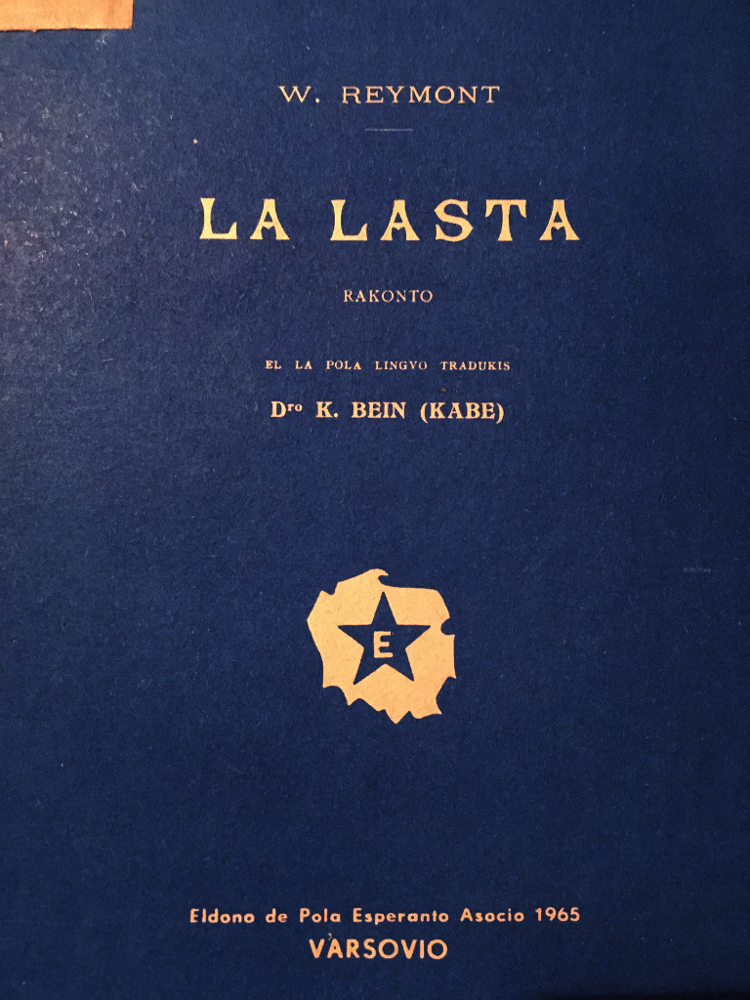

Dua eldonoEldono de Pola Esperanto Asocio, VARSOVIO 1965
La suno flugis malalte super la akvoj, kvazaŭ birdo laca kaj malfacile trenanta post si la orajn flugilojn. La superstarantaj bordoj, la altaj tufoj de la arboj, la sovaĝaj pintoj de la ŝtonegoj, la malfermitaj la izolitaj menhiroj, ŝajnis, sin klinis al la maro kaj etendis al ĝi siajn petegantajn brakojn, kvazaŭ por reteni ĝin — sed la maro, pala, malklarigita, timanta, kuris for senhalte, malleviĝis pli kaj pli rapide, ĉar supre, sur la malĝoja ĉielo, rapidis grizaj, monstraj korpoj de la nuboj. Ili kuris antaŭ ĝin de la nordo, minace rampis de la sudo, fluis en sennombra amaso de la oriento, sekvis ĝiajn postsignojn kaj kuniĝante en duonrondo jam persekutis ĝin kvazaŭ aro de koleraj hundoj, kvazaŭ malsata, furioza brutaro...
De tempo al tempo jam fariĝis mallume, ĉar jam kelkaj nuboj venkis en la vetkuro, kaj intermiksitaj senorde en la furioza flugo kaj ŝaŭmantaj kvazaŭ bestoj, blinde sin ĵetis en la ardantan senfundaĵon de la suno...
La tago ektremis de maltrankvilo, teruro traflugis la mondon, eksilentis ĉiuj voĉoj, ĉiuj estaĵoj haltigis la spiron, la oceano por unu momento senmoviĝis, ekregis la silento de la teruro, la silento de la atendo. La akvoj apenaŭ murmuretis refluante rigide en la senfundaĵojn de la timo kaj silento; inter la ŝtonegoj, montrantaj la nigrajn dentojn, ekploregis la lastaj ondoj, kaj la longaj strioj de la ŝaŭmoj sin kroĉis al la ŝtonoj kun plenda, mortanta plaŭdo.
Subite, la tago komencis disfali.
La nuboj atingis la sunon de ĉiuj flankoj kaj sin ĵetante sur ĝin ŝiris la diskon en fajrajn ĉifonojn, manĝegis ĝin avide per siaj kotaj buŝegoj, kaj ĝi kvazaŭ dronis en la malpuraj faŭkoj kaj estingiĝis. Cindra, malĝoja krepusko falis sur la blindigitan tagon.
Ie malproksime, malproksime eksonis malklare malgaja tondro.
Kaj poste ekregis kadavra, senfunda silento.
En la mondo fariĝis io nekomprenebla.
Io Nekonata iris peze sur la plumbaj akvoj de l' oceano, tiel ke la kontinentoj tremis, la mevoj, kaptitaj de timo, forkuris de la ŝtonegaj nestoj kaj la arboj skuiĝis de teruro.
El la fiŝista vilaĝo, sin etendinta apud la golfo, el la mallarĝaj stratetoj, el la granitaj dometoj, de la blankaj vojoj kun du vicoj de kurbigitaj kverkoj, kuris virinoj, nigre vestitaj, klakis lignaj ŝuoj sur la granitoj, ŝanceliĝis blankaj kufoj kaj rubandoj flirte sekvis ilin; la virinoj iris rapide, iris duope, triope, kvarope, kvazaŭ mallongaj ŝaŭmantaj ondoj, forkurantaj de la ventego; ili haltis senmove sur la ŝtonegoj, kaj iliaj maltrankvilaj okuloj vagis en la malgajaj krepuskoj, kvazaŭ birdoj, vane serĉantaj teron.
Nenie velo kuraĝis kuri sur la griza senfundaĵo, nenie oni povis vidi strion de fumo, nenie aŭdi plaŭdon en la spaco.
La lignaj ŝuoj klakis kaj klakis; de la mallarĝaj stratoj, el la granitaj dometoj, de la blankaj vojoj senĉese elkuris virinoj, iris duope, triope, kvarope, trikis ŝtrumpojn kaj iris fikse rigardante la grizan malproksimon, iris rapide, tiel ke ŝanceliĝis la kufoj kaj la rubandoj flirte sekvis ilin.
Ili grimpis sur la supron de alta amaso de disrompitaj ŝtonegoj, kvazaŭ per la mano de ciklopoj ĵetitaj malproksimen en la maron, ĝis la alta kapelo, kiu sin levis meze de frakasitaj, senorde kunĵetitaj granitaj ondoj, kaj rigardis al la malpleno de la oceano, kun timo aŭskultante la teruran silenton.
Kaj poste ili sidiĝis sur la abrupta pordo, en unu vico, kvazaŭ funebraj birdoj kun blankaj kapoj; ili trikis ŝtrumpojn, la dratoj trembrilis en iliaj manoj, kaj de tempo al tempo murmureto sin deŝiris de iliaj paliĝintaj lipoj — ili sidis senmove, fikse rigardante la silentajn, senlimajn malproksimojn, kaj iliaj animoj vagis sur la profundaĵoj de la horizonto, sur la abismoj de la malgajaj dezertoj, serĉis sur la plumbaj akvoj, vokante per mutaj voĉoj, vokante plende.
Nenie velo aperis el la profundaĵo, nenie plaŭdo de remiloj rompis la silenton.
Io Nekonata iris peze al la malĝojaj koroj.
Ĉirkaŭe fariĝis io nekomprenebla.
Jen la ĉielo kvazaŭ subite fendiĝis, la grizaj, grandegaj korpoj de la nuboj rulfalis de la alteco, saltis sur la akvojn kaj la teron, kiel monstraj volvaĵoj de cindroj, disfalantaj en grizajn nebulojn.
Sin levis netrapenetrebla, silenta polva uragano. En sensona, senfunda silento la grizaj sablosimilaj nebuloj superŝutis la tutan mondon; ili leviĝis de la akvoj en senordaj tufoj, sin trenis de la tero en volviĝanta, griza amaso, ŝprucis de la ĉielo kvazaŭ el neelĉerpeblaj krateroj, en kolonoj de palaj fumoj, rampis malrapide, leviĝis, kvazaŭ ŝaŭmantaj fontanoj, amasiĝis dense kiel netrapenetrebla arbaro kun malklaraj konturoj de neatingeblaj limoj, disfluis pli kaj pli vaste kaj fluis senĉese, kiel silenta, ŝaŭmanta maro de grizeco kaj malĝojo.
La virinoj komencis alvoki unu alian kaj erarante en la nebuloj kolektiĝi apud la kapelo; ili sin premis al la muroj, sidiĝis en la malfermita pordo kaj ne ĉesante movi la trembrilantajn trikilojn kun pli kaj pli granda maltrankvilo rigardis la blindiĝantan mondon.
La vilaĝo jam dronis en la grizeco, la plej altaj suproj de la kverkoj jam ŝanceliĝis kvazaŭ mizeraj ombroj el sub la akvo, la menhiroj, de prajarcentoj starantaj garde sur la bordoj, estis nur fantomoj, kaj la oceano eniĝis malrapide en la malklaran senfundaĵon, brilante ankoraŭ de tempo al tempo el sub la blanko, kvazaŭ ekdormanta okulo, ĝis fine ankaŭ ĝi falis en la nebulojn, ĝis fine ĉio malaperis en la griza, moviĝema, netrapenetrebla abismo.
Ĉio fariĝis kvazaŭ polvo kaj cindro kaj malaperis en la senfundaĵoj de la nenieco.
Apud la kapelo de tempo al tempo ekmurmuris tima voĉo, iafoje ekfrapis ligna ŝuo aŭ plende sonis ies ploro.
Kaj poste sekvis longaj, doloraj, pezaj momentoj de la silento.
Subite en la morta sensoneco eksonis trapenetranta sonoro, kvazaŭ de malproksima, malproksima sonorilo.
― Oni sonorigas ĉe la sankta Anno! diris iu.
Kaj tuj respondis dua sonorilo, kvazaŭ el la profundaĵo de la akvoj kaj erarante tra la nebuloj, vokis mallaŭte, plende, longe.
― Ĉe la sankta Filiberto, en Treguen oni sonorigas! diris iu.
Poste ektondris ie alte, de sub la ĉielo, kvazaŭ eĥo de anĝela ĥoro.
― Ĉe la sankta Zito oni sonorigas! diris iu.
Kaj poste eksonis kvara, kvina sonorilo kaj pli malproksimaj, apenaŭ aŭdeblaj.
Ĉiumomente alkuris nova voĉo, ĉiumomente de alia flanko leviĝis voĉo kaj kantis la saman kanton, tiel ke iafoje ili kune sendis sian metalan ĥoron al la grandega mondo, al la tuta oceano, kiel birda aro, plende pepanta.
De tempo al tempo ŝiriĝis la akorda akompano, malklariĝis, mallaŭtiĝis kaj diskuris, kaj nur apartaj, izolitaj sonoj, kvazaŭ krioj de teruro, kvazaŭ ploro de infanoj, eraris, perdinte la vojon en la grizaj, senfundaj abismoj.
La nebuloj, kvazaŭ disŝiritaj de la senĉesaj sonoj de l sonoriloj, komencis furiozi, fariĝis nigra kaj bolanta formikaro, kaj en la dronigitaj spacoj ekplaŭdis la ondoj kaj sin elŝiris peza, sufokita spiro de la oceano. Varma vento ekblovis de la tero, sin traigis silente tra la nebuloj, kisis karese la plorantajn okulojn de la virinoj kaj kuris for kun timo, malaperis en la silenta spaco.
La sonoriloj vokis kaj vokis la erarintajn, kiel malĝojaj patrinoj, per profunda, kora voĉo de la maltrankviloj: la tuta bordo ĝemis en la metala plorego, la tuta tero kvazaŭ petegis mizerikordon de la oceano.
La virinoj en tomba silento paŝis en la kapelon kaj en nebuloj, ne trapenetreblaj ankaŭ tie, ekgenuis duope, triope, kvarope.
Dipatrino, tuta en oro kaj en bluo de la vestoj, sidis kun la infano sur malalta altaro; ŝia etendita mano, la pala vizaĝo kaj la senmovaj okuloj estis apenaŭ videblaj en la malforta lumo de la malgrandaj lampoj.
Ili ekgenuis humile kaj klinante la kapojn al la tero, murmuretis varmegajn preĝojn.
Iu knabino prenis la ŝnuron, pendantan super la altaro, kaj eksonorigis. Ŝi sin klinis malrapide, ritme, kaj fikse rigardante la senmovajn sanktajn okulojn, sonorigis alarmon, donis signon al la erarantaj en la oceano, kriis, ke oni maldormas, ke oni timas pro ili, ke oni ploras.
La preĝoj murmuretis kvazaŭ mallaŭta kaj peza pluvo, leviĝis iafoje sopiroj, tremis haltigataj ploregoj, petege sin etendis ies manoj, kaj la sonorilo ĝemis senĉese kaj batis febre, kiel la timigitaj koroj, kaj de la nebula spaco respondis al ĝi aliaj, malproksimaj kaj proksimaj, per sama, longa ĝemo, kiel ĉiuj ĉi koroj, kiuj tie sur la dezertaj bordoj, en la mizeraj vilaĝoj de la fiŝistoj, sur la izolitaj ŝtonegoj, tremis de morta teruro.
La virinoj rampis ĝis la altaro, kaj el la turmentitaj koroj sin elŝiris petega, saturita de larmoj kanto:
Ĉe la ŝnuro alternis la virinoj, kaj la sonorilo ne silentis eĉ unu momenton, balanciĝis senĉese, ploregis febre, petegis kaj iafoje ĝemis dolore, kiel ĉi tiuj kantoj, sin levantaj el sub la piedoj de Dipatrino, en kora ploro, kiel la plendaj petegoj:
Sed la ŝipoj ne revenis.
Jam la nokto, falanta sur la ŝaŭmantajn abismojn, ĵetis sur la mondon sian minacan ombron. La nigriĝintaj nebuloj fluidiĝis, gutante en eta kaj malvarma pluvo. De tempo al tempo oni aŭdis la venton, ŝirantan la arbojn, iafoje minace muĝis la oceano, sed poste la silento fariĝis ankoraŭ pli profunda, kaj en ĝi la voĉoj de la sonoriloj, senĉese batantaj, sin levis ĝis la ĉielo, kvazaŭ kolonoj de sonoj, vokantaj la Sinjoron, kaj la kanto de la virinoj, la sangaj krioj de la petegoj disflugis sen eĥo, kiel pepado de birdidoj en la senfineco de la nokto kaj de la silento.
Longajn, longajn horojn ili preĝis varmege, rigardante la senmovajn okulojn de Dipatrino; iliaj koroj jam komencis sveni en la maltrankviloj, kiam subite iu ekkriis:
― Lumoj sur la maro!
La sonorilo eksilentis, interrompiĝis la kanto, la virinoj elkuris sur la bordon kaj sin kroĉante al la ŝtonegoj, manĝis per la okuloj la mallumon.
Jam ie ne malproksime, kvazaŭ sur la vojo al la golfo, ekbrilis iaj tremantaj svarmoj, surirante iafoje la ondojn nevideblajn en petola, subtila fosforesko kaj malaperante dum senfine longaj momentoj.
La virinoj viŝis la larmajn okulojn kaj kun haltigata spiro, almetante la orelojn al la tero, kaptis avide la sonojn de la voĉoj kaj la plaŭdojn de la remiloj, ankoraŭ malproksimajn kaj apenaŭ aŭdeblajn.
― Ili revenas, revenas!
La krioj sin ĵetis en la nebulojn, kiel aro de voĉoj, fervore kantantaj.
― Ili revenas! Oni sonorigu! Ili eniras inter la ŝtonegojn! Lumojn!
La sonorilo ree ektondris el la kapelo, kaj sur la bordo, en la netrapenetreblaj nebuloj, ekflirtis brilaj rondoj, kvazaŭ oraj papilioj, ekfrapis la lignaj ŝuoj, ŝprucis gaja, senorda bruo, la vokoj kaj revokoj flugis, kvazaŭ ĝoje ĉirpantaj birdoj, ĉar pli kaj pli proksime batis la remiloj, lumaj strioj kun malsekaj pintoj malrapide rampis el la profundaĵoj, kaj tuj post ili sin montris iom post iom procesio de fantomoj, kvazaŭ teksitaj el nebuloj kaj ombroj. Ĉeno de ŝipoj trembrilis pli kaj pli klare.
― Kiu estas la unua? Kiu? demandis la virinoj, sin klinante super la oceano.
― Sainte-Barbe, oni respondis el la nebulo.
Kelke da virinoj galope sin ĵetis al la haveno.
― Ĉu ĉiuj revenas?
― Oni ne scias. Ni perdis unu alian en la nebuloj.
― Ĉu bone estis la kapto? Kiu parolas?
― Rosa Mistica.
― Kiu veturas post vi?
― Trois-Etoiles.
La vokoj kruciĝis inter la lanternoj kaj la bordo. La virinoj, faletante en la mallumo, rapide revenis al la haveno, kaj la procesio de la nebulaj konturoj jam navigis en la golfon, la akvoj plaŭdis, ŝirataj de la akraj bekoj, la remiloj ritme batis, knaris la mallevitaj trastangoj.
La sonoriloj jam silentiĝadis sur la bordoj, ĉiumomente en alia loko malaperis subite la sonoj, mutiĝis la nokto, tra la nigraj nebuloj, gutigantaj pli kaj pli densan pluvon, komencis sin traigi fulmaj briloj, la lumoj de nevideblaj lanternoj kuris sur la oceanon kun siaj viglaj okuloj, en la haveno la homamaso estis pli kaj pli granda kaj ĝoja. Ĉiuminute oni albordiĝis, ĉiumomente iu nigra ŝipo saltis sur la bordon kvazaŭ fiŝo kaj sin kuŝiĝis sur la flanko. Sur la bordo svarmis lumoj, la nebuloj ĉe ilia brilo balancis siajn malpurajn ĉifonojn, kiel disŝiritajn malsekajn retojn; klakis la lignaj, ŝuoj, brufermiĝis la pordoj, ŝprucis la ridoj kaj la ĝojaj salutaj ekkrioj; ĉiumomente ia aro malaperis en la granitaj dometoj, en la mallarĝaj stratoj aŭ en la nebulaj faŭkoj de la vojoj.
Sole la sonorilo de la kapelo ankoraŭ vokis ĝeme, ĉar mankis tri ŝipoj kaj aro da virinoj staris garde sur la ŝtonegoj.
Du el ili revenis ankoraŭ antaŭ la noktomezo, kaj kiam la maristoj, kolektinte la retojn, iris al la domoj, maljuna virino baris al ili la vojon.
― Ĉu malproksime ankoraŭ estas Je cherche? demandis ŝi mallaŭte.
― Ni ne scias. Tuj post la tagmezo kaptis nin nebulo kaj vento, ni perdis unu alian. Eble ĝi veturas post ili, eble eraras, aŭ eble atendas apud Sirenoj, ĝis malleviĝos la nebuloj. Malbona vetero, sur la libera maro: ondoj de malsupre kaj mallonga vento, kaj la nebulo tiel sufokas, ke apenaŭ apud la ŝtonegoj ni ekaŭdis la sonorilojn. Sed ne timu, ili revenos matene. Bonan nokton, patrino Caradec!
Ŝi ne respondis, avide rigardante kaj aŭskultante la oceanon.
Jam de longe eksilentis la bordo, jam la lastajn korbojn kun la fiŝoj oni elportis el la barkoj, jam ie fermiĝis la lasta pordo, la lastan drinkejon oni fermis kaj la lasta fenestro estingiĝis, kaj la patrino Caradec ankoraŭ maldormis.
Malleviĝis la nokto, muta, malluma kaj malseka. La nebuloj vindis la mondon kvazaŭ nigraj, malsekaj mortkovriloj, sur kiuj de tempo al tempo brilis arĝentaj strioj de malproksimaj lumoj. La oceano peze moviĝis en la mallumoj, la akvoj leviĝis, oni aŭdis, kiel la ondoj amase kuris el la profundaĵoj kaj disŝprucis kun ĝemo ĉe la bordoj. Rekomenciĝis sovaĝa, obstina batalo kontraŭ la tero.
La fiŝista vilaĝo dormis, la granitaj dometoj ekdormis, la mallarĝaj stratoj kaj la senfinaj vojoj kuŝiĝis morte sur la fundo de la mallumo.
Nur en la krepuska, malplena kapelo brulis unu sola lampo, kaj en la tremanta, ora lumo aperis la fantome blua vizaĝo de Dipatrino kaj ŝiaj senmovaj okuloj rigardis tra la nebuloj, tra la tuta mondo.
La patrino Caradec sidis ĉe la sojlo; transmetante la erojn de la rozario, ŝi aŭskultis la balbutantan parolon de la oceano.
Ŝi atendis pacience la filon kaj lian fieran Je cherche.
Senĉese falis subtila pluvo kaj frapis ŝian kapon kun unutona, dormiganta murmureto; iafoje la ondoj de la alfluo kraĉis salan, malpuran ŝaŭmon, sed ŝi ne sentis la malvarmon, ŝi ne sciis, kio okazas ĉirkaŭ ŝi, dronanta en preĝo. Ŝi recitis la reĝojn de la rozario, longe tenante ĉiun eron kaj kun senlima amo murmuretante ĉiun vorton, ĉar per ĉi tiu preĝo ŝi sin defendis kontraŭ la timoj kaj maltrankviloj, kiuj ĉirkaŭvolvis ŝian koron per sufokaj ringoj, kvazaŭ fajraj serpentoj, tiel ke iafoje ŝi forgesis la preĝon, la rozario elfalis el ŝiaj fingroj, kaj ŝi turnis siajn okulojn al la minacaj, malfeliĉon antaŭdirantaj mallumoj.
La filon, ŝi serĉis tie kaj ŝi trovis teruron, ĉar kvazaŭ eliĝinte el la nebuloj ĉirkaŭis ŝian animon teruraj fantomoj de la estinteco.
Vekiĝis en ŝi la iamaj, doloraj malbenitaj momentoj.
― Kompatu min, mizerikorda Patrino, murmuretis ŝi petege, revenante en la cirklon de la oraj briloj de la kapelo kaj kiel forlasita birdido sin premante konfide al la sanktaj piedoj. Ŝi volis forkuri de la teruraj fantomoj, sed kvazaŭ kadavroj sin levis el la ĉerkoj la forgesitaj iamaj turmentoj, iamaj malesperoj kaj kovris la tutan esperon.
Ĉar same, kiel nun, ŝi atendis iam la edzon; en la sama loko, en same terura, nebula aŭtuna nokto.
Kaj li ne revenis.
― Patrino, plena de mizerikordo, kompatu min! ploregis ŝi malespere. Novaj rememoroj elrampis el la kavoj de la memoro, procesio de reviviĝantaj suferoj disŝiris ŝian koron.
Ĉar same, kiel nun, ŝi atendis iam la pli aĝan filon, en terura nokto de uraganoj, kaj ĉe la samaj sanktaj piedoj almozpetis mizerikordon.
Kaj li ne revenis.
Ventego de subita, nigra teruro levis ŝin de la loko kaj ĵetis en la polvon, antaŭ la altaron, antaŭ la palan, apenaŭ videblan vizaĝon.
La senmovaj okuloj rigardis tra la oraj briloj, trapenetrante ŝin tiel senkompate, ke ŝi salte leviĝis kun malbena krio kaj sin ĵetis al la bordo. Kaj erarante inter la ŝtonegoj, faletante en la mallumoj, longe ŝi kriis malesperan krion, longe alvokis la filon kaj de la senfineco petegis mizerikordon.
La oceano sub la nigraj volvaĵoj de la nebuloj kaj de la nokto bolis minace, la ondoj de la alfluo sin levis el la profundaĵoj, ŝprucis pli kaj pli alten kaj batante la ŝtonegojn, falis en la abismojn. La oceano jam komencis furiozi en sia sovaĝa kaj blinda forto, himno de teruraj potencoj tondris en la senfineco, kaj la voĉo de la turmentita patrina koro estis kvazaŭ murmureto de falanta folio dum fulmotondro, kaj ŝiaj larmoj, ŝiaj malesperoj kaj esperoj, la tuta turmento de la homa estado pezis kvazaŭ plumo, kaptita de uragano, estis guto, estis tremo pereinta por eterne en la ĥaoso, estis nenio.
La patrino Caradec, kompreninte sian senliman malfortecon, sin enŝovis humile en la kapelon, prenis la ŝnuron kaj ekbalancis la sonorilon per ĉiuj fortoj, per ĉiuj fortoj de la espero.
La okulojn frenezajn de la malespero, okulojn almozpetantajn, okulojn mortantajn ŝi alkroĉis al tiuj senmovaj sanktaj okuloj, hurletante plende:
― Revenigu lin! Revenigu!
Ŝi sonorigis obstine, senĉese, senlace.
La sonorilo vokis per voĉo de teruro, per voĉo de malespero, vokis per la sopiro de la atendoj, vokis plende... kiel ĉi tiu patrina koro;
...iafoje ĝi sin levis vivege kaj kvazaŭ en morta febro kriis sovaĝe kaj senorde, kriis, kiel krias la dronantoj, furiozis en terura atako de doloro... kiel ĉi tiu patrina koro;
...iafoje, kvazaŭ perdinte la lastajn fortojn, ĝi nur ploris, mallaŭte plendante, kaj inter ploregoj, la koron disŝirintaj, inter ĝemoj, kriis doloran, tremigantan krion... kiel ĉi tiu patrina koro;
...kaj iafoje ĝi silentiĝis rigida kaj nur post longa momento eksplodis potence; la kolero ĝin skuis kaj la malamo, ribelo incitis, tiel ke ĝi batis minace la blindan nokton, kvazaŭ per kunmetita pugno, kaj malbenis per tondra voĉo la maljustaĵojn... kiel ĉi tiu patrina koro.
Ŝi tamen sonorigis kaj sonorigis, la manoj senkonscie tiris la ŝnuron, la dorso kurbiĝis kaj rektiĝis aŭtomate, la tuta espero pendis ĉe la korsimila frapilo de la sonorilo kaj per la propra koro, rigida de sufero, batis la metalon kaj la okulojn alkroĉis al la sanktaj, senmovaj okuloj.
Ŝi sonorigis jam senkonscia, sed kun pli kaj granda kredo kaj konfido, ĉar ŝajnis al ŝi, ke la ŝtona mano sin etendas al ŝi kaj karese viŝas ŝian vizaĝon, malsekan de la larmoj, kiuj kvazaŭ senfina ŝnuro de perloj ruliĝis senĉese, kaj ke la ŝtonaj, bluaj lipoj ion parolas al ŝi, ke ŝi klare aŭdas voĉon de mizerikordo kaj kompato.
Ŝi sonorigis kaj sonorigis senĉese, en ekstaza deliro, aŭskultante atente la sanktajn murmuretojn, kiuj kvazaŭ anĝela ĥoro fluis en ŝian animon, alportante konsolon, trankvilon kaj senliman, neesprimeblan per la vortoj feliĉon de la forgeso.
. . . . . . . . . . . . . . . . . . . .
Matene oni forŝiris ŝin frenezan de la ŝnuro. Ŝi falis por eterne en la teruran nokton de la atendoj.